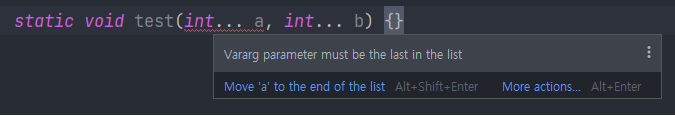

기존에는 메서드의 매개변수 개수가 고정적이었으니 JDK 1.5부터 동적으로 지정해 줄 수 있게 되었다.
가변인자는 타입... 변수명 과 같은 꼴로 표현하고
대표적인 예로 PrintStream 클래스의 printf()가 있다.
public PrintStream printf(String format, Object... args)
위와 같이 매개변수가 가변인자 외에도 있으면
가변인자를 매개변수 중 가장 마지막에 두어야한다.
그렇다면 가변인자가 복수개 인 경우는 어떻게 될까?
직접 테스트를 해보았다.

결과는 위와 같다. 메서드가 가질 수 있는 가변인자는 1개가 최대인 것 같다.
가변인자가 그럼 어떻게 매개변수를 동적으로 받는 것일까?
가변인자는 배열을 이용해 받는다고 한다. 따라서 가변인자가 선언된 메서드를 호출할 때마다 배열이 새로 생성된다. 이러한 비효율이 숨겨져 있기 때문에 꼭 필요한 경우에만 사용하는 것이 좋다고 한다.
책에서는 가변인자를 가지는 메서드는 오버로딩하면 메서드들을 구분하지 못하는 경우가 발생하기 쉽다고 얘기한다.
가능하면 가변인자를 사용한 메서드는 오버로딩을 사용하지 않는 것이 좋다고 한다.